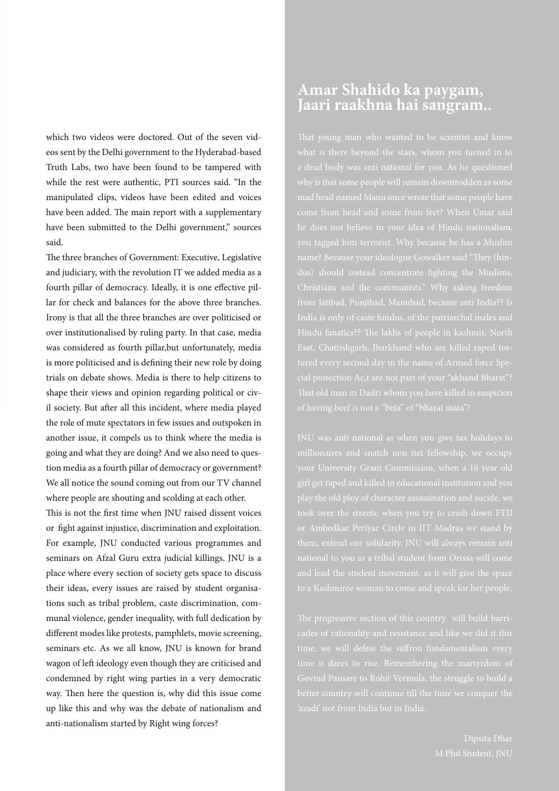

t
which two videos were doctored. Out of the seven vid-
eos sent by the Delhi government to the Hyderabad-based
Truth Labs, two have been found to be tampered with
while the rest were authentic, PTI sources said. “In the
manipulated clips, videos have been edited and voices
have been added. e main report with a supplementary
have been submitted to the Delhi government,” sources
said.
e three branches of Government: Executive, Legislative
and judiciary, with the revolution IT we added media as a
fourth pillar of democracy. Ideally, it is one eective pil-
lar for check and balances for the above three branches.
Irony is that all the three branches are over politicised or
over institutionalised by ruling party. In that case, media
was considered as fourth pillar,but unfortunately, media
is more politicised and is dening their new role by doing
trials on debate shows. Media is there to help citizens to
shape their views and opinion regarding political or civ-
il society. But aer all this incident, where media played
the role of mute spectators in few issues and outspoken in
another issue, it compels us to think where the media is
going and what they are doing? And we also need to ques-
tion media as a fourth pillar of democracy or government?
We all notice the sound coming out from our TV channel
where people are shouting and scolding at each other.
is is not the rst time when JNU raised dissent voices
or ght against injustice, discrimination and exploitation.
For example, JNU conducted various programmes and
seminars on Afzal Guru extra judicial killings. JNU is a
place where every section of society gets space to discuss
their ideas, every issues are raised by student organisa-
tions such as tribal problem, caste discrimination, com-
munal violence, gender inequality, with full dedication by
dierent modes like protests, pamphlets, movie screening,
seminars etc. As we all know, JNU is known for brand
wagon of le ideology even though they are criticised and
condemned by right wing parties in a very democratic
way. en here the question is, why did this issue come
up like this and why was the debate of nationalism and
anti-nationalism started by Right wing forces?
Amar Shahido ka paygam,
Jaari raakhna hai sangram..
at young man who wanted to be scientist and know
what is there beyond the stars, whom you turned in to
a dead body was anti national for you. As he questioned
why is that some people will remain downtrodden as some
mad head named Manu once wrote that some people have
come from head and some from feet? When Umar said
he does not believe in your idea of Hindu nationalism,
you tagged him terrorist. Why because he has a Muslim
name? Because your ideologue Gowalker said “ey (hin-
dus) should instead concentrate ghting the Muslims,
Christians and the communists.” Why asking freedom
from Jatibad, Punjibad, Manubad, became anti India?? Is
India is only of caste hindus, of the patriarchal males and
Hindu fanatics?? e lakhs of people in kashmir, North
Esat, Chattishgarh, Jharkhand who are killed raped tor-
tured every second day in the name of Armed force Spe-
cial protection Ac,t are not part of your “akhand Bharat”?
at old man in Dadri whom you have killed in suspicion
of having beef is not a “beta” of “bharat mata”?
JNU was anti national as when you give tax holidays to
millionaires and snatch non net fellowship, we occupy
your University Grant Commission, when a 16 year old
girl get raped and killed in educational institution and you
play the old ploy of character assassination and sucide, we
took over the streets; when you try to crash down FTII
or Ambedkar Periyar Circle in IIT Madras we stand by
them, extend our solidarity. JNU will always remain anti
national to you as a tribal student from Orissa will come
and lead the student movement, as it will give the space
to a Kashmiree woman to come and speak for her people.
e progressive section of this country will build barri-
cades of rationality and resistance and like we did it this
time, we will defeat the saron fundamentalism every
time it dares to rise. Remembering the martyrdom of
Govind Pansare to Rohit Vermula, the struggle to build a
better country will continue till the time we conquer the
‘azadi’ not from India but in India.
Dipsita Dhar
M Phil Student, JNU